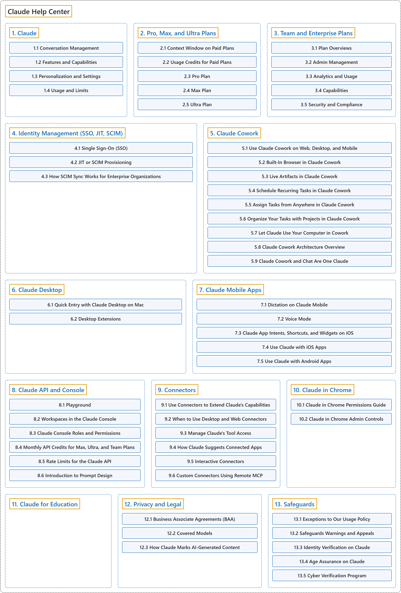

Claude Help Center
Official source: Claude Help Center, Anthropic.
Classification

Glossary
| Term | Definition | 中文翻译 | Source |
|---|---|---|---|
| Claude Help Center Claude 帮助中心 |
(Summary) Anthropic's support site, organized by product, plan and topic. | （概述）Anthropic 的支持网站，按产品、套餐和主题分类。 | Anthropic, n.d., "Claude Help Center" |
| 1. Claude Claude |
(Summary) Articles on the chat product itself, covering its features, settings and usage limits. | （概述）有关聊天产品本身的文章，涵盖功能、设置和用量限制。 | Anthropic, n.d., "Claude" |
| 2. Pro, Max, and Ultra Plans Pro、Max 与 Ultra 套餐 |
(Summary) The paid plans for individuals, which differ mainly in how much usage they allow. | （概述）面向个人的付费套餐，主要区别在于可用量的多少。 | Anthropic, n.d., "Pro, Max, and Ultra Plans" |
| 3. Team and Enterprise Plans Team 与 Enterprise 套餐 |
(Summary) The plans for organizations, adding admin tools, identity and compliance controls. | （概述）面向组织的套餐，增加了管理工具、身份和合规控制。 | Anthropic, n.d., "Team and Enterprise Plans" |
| 4. Identity Management (SSO, JIT, SCIM) 身份管理（SSO、JIT、SCIM） |
(Summary) Settings that let an organization sign members in through its own identity provider and create accounts automatically. | （概述）让组织通过自己的身份提供商登录成员，并自动创建账号的设置。 | Anthropic, n.d., "Identity Management (SSO, JIT, SCIM)" |
| 5. Claude Cowork Claude Cowork |
(Summary) A product that applies the agent abilities of Claude Code to office work other than programming. | （概述）把 Claude Code 的代理能力用于编程以外的办公工作的产品。 | Anthropic, n.d., "Claude Cowork" |
| 6. Claude Desktop Claude Desktop |
(Summary) The computer application of Claude for macOS, Windows and Linux, which also hosts Claude Code and Cowork. | （概述）Claude 的电脑应用，支持 macOS、Windows 和 Linux，也可运行 Claude Code 和 Cowork。 | Anthropic, n.d., "Install Claude Desktop" |
| 7. Claude Mobile Apps Claude 移动应用 |
(Summary) Claude's apps for iOS and Android, with voice and phone integrations. | （概述）Claude 的 iOS 和 Android 应用，带有语音和手机系统集成。 | Anthropic, n.d., "Claude Mobile Apps" |
| 8. Claude API and Console Claude API 与 Console |
(Summary) Programmatic access to Claude and its web console for teams and testing. | （概述）以编程方式访问 Claude，以及用于团队管理和测试的网页控制台。 | Anthropic, n.d., "Claude API and Console" |
| 9. Connectors 连接器 |
(Summary) Links that let Claude reach your other apps and services and act in them with your permissions. | （概述）让 Claude 访问你的其他应用和服务，并按你的权限在其中操作的连接。 | Anthropic, n.d., "Use connectors to extend Claude's capabilities" |
| 10. Claude in Chrome Claude in Chrome |
(Summary) A browser add-on through which Claude works on web pages beside you. | （概述）一个浏览器扩展，Claude 通过它与你一起操作网页。 | Anthropic, n.d., "Claude in Chrome" |
| 11. Claude for Education Claude for Education |
(Summary) The university offering of Claude, set up and run by campus administrators. | （概述）面向大学的 Claude 版本，由校内管理员设置和管理。 | Anthropic, n.d., "Claude for Education" |
| 12. Privacy and Legal 隐私与法律 |
(Summary) Anthropic's notices and agreements on data handling and terms of use. | （概述）Anthropic 关于数据处理和使用条款的通知与协议。 | Anthropic, n.d., "Privacy and Legal" |
| 13. Safeguards 保障措施 |
(Summary) Anthropic's rules and checks for keeping the use of Claude safe. | （概述）Anthropic 为确保 Claude 被安全使用而设的规则和检查。 | Anthropic, n.d., "Safeguards" |
References
Anthropic. (n.d.). Claude Help Center. Retrieved November 8, 2026, from https://support.claude.com/en/